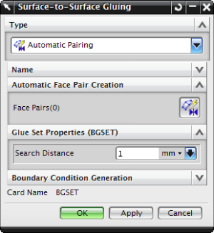

To connect surfaces to prevent relative motion in all directions, use the Surface-to-Surface Gluing simulation object. An NX Nastran glue connection is a simple and effective method to join dissimilar meshes.
To glue two surfaces, you must first define the regions where you want to create glue elements (stiff springs that connect and constrain the surfaces). A region is a collection of element free faces in a section of the model where you expect gluing (or contact) to occur. These regions can be created using shell elements and using free faces of solid elements.
You can either specify the glued surfaces manually, or you can have the software automatically determine which pairs of faces to glue together.
To manually specify source and target surfaces in the glue definition, you can select an existing Simulation Region or create a new one.
To have the software automatically determine the glued surfaces, you can use the Create Automatic Face Pairs dialog box to specify the criteria the software uses to search for surfaces.
